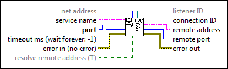
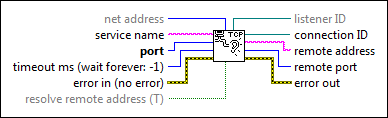

TCP Listen VI
Owning Palette: TCP VI and Functions
Requires: Base Development System
Creates a listener and waits for an accepted TCP network connection at the specified port.

 Add to the block diagram Add to the block diagram |
 Find on the palette Find on the palette |
Owning Palette: TCP VI and Functions
Requires: Base Development System
Creates a listener and waits for an accepted TCP network connection at the specified port.

| Add to the block diagram |
Find on the palette |
 |
net address specifies on which network address to listen. Specifying an address is useful if you have more than one network card, such as two Ethernet cards, and want to listen only on the card with the specified address. If you do not specify a network address, LabVIEW listens on all network addresses. Use the String To IP function to obtain the IP network address of the current computer. |
 |
service name creates a known reference for the port number. If you specify a service name, LabVIEW registers the service name and the port number with the NI Service Locator. |
 |
port is the port number on which you want to listen for a connection. |
 |
timeout ms specifies the time, in milliseconds, that the VI waits for a connection. If a connection is not established in the specified time, the VI completes and returns an error. The default value is –1, which indicates to wait indefinitely. |
 |
error in describes error conditions that occur before this node runs. This input provides standard error in functionality. |
 |
resolve remote address indicates whether to call the IP To String function on the remote address. The default is TRUE. Refer to IP To String for more information. |
 |
listener ID is a network connection refnum that uniquely identifies the listener. |
|
connection ID is a network connection refnum that uniquely identifies the TCP connection. Use this value to refer to this connection in subsequent VI calls. |
 |
remote address is the address of the remote machine associated with the TCP connection. If resolve remote address is TRUE, this address is in the form machinename.domain.com. If resolve remote address is FALSE, this address is in IP dot notation format such as 128.0.0.25.� |
 |
remote port is the port the remote system uses for the connection. |
 |
error out contains error information. This output provides standard error out functionality. |
When a listen on a given port begins, you cannot use another TCP Listen VI to listen on the same port. For example, if a VI has two TCP Listen VIs on its block diagram and you start a listen on port 2222 with the first TCP Listen VI, you cannot listen on port 2222 with the second TCP Listen VI.
Until the top level VI containing this VI goes idle, this VI maintains a table of active listeners and the ports on which they listen, sorted by listener ID. Subsequent calls to this VI reuse these listeners depending on the service name, port, and net address you specify. However, if you wire a value of 0 to the port terminal and an empty string to the service name terminal, each call to this VI creates a new listener on an open port. Therefore, if you wire the VI in this manner and specify any timeout other than the default, this VI creates a new listener on an open port each time the VI times out, which consumes socket resources. To free socket resources in this situation, wire the listener ID terminal to the TCP Close Connection function to free the port the listener uses. Or, wire the listener ID terminal to the TCP Wait on Listener function to listen for a connection on a single port.